Criar conta e aprovação
O cadastro é aberto a qualquer pessoa, mas cada conta nova passa por uma aprovação feita à mão por um administrador antes do primeiro acesso. Enquanto ela não vem, o Mensal mostra a tela Aguardando aprovação.
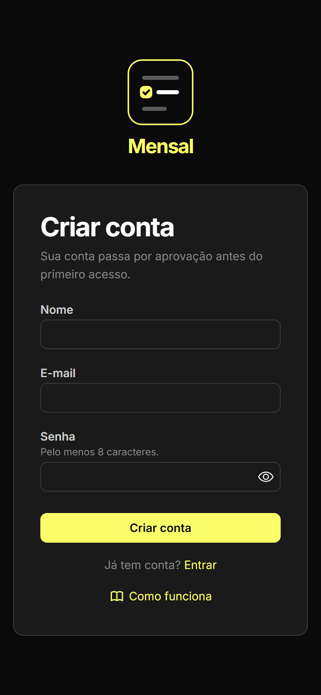
- Abra Criar conta e informe seu nome, seu e-mail e uma senha de pelo menos 8 caracteres.
- Toque em Criar conta. Você entra direto na tela Aguardando aprovação: a conta existe, mas ainda não pode ser usada.
- Quando a conta for aprovada, recarregue a página. O Mensal não envia e-mail avisando da aprovação.
Enquanto aguarda, você pode sair ou excluir a conta pela mesma tela.
O mês
A tela do mês mostra todas as contas de uma competência: as que vêm das suas recorrências e as avulsas. Nada precisa ser preparado: todo mês já abre pronto, inclusive os que ainda não chegaram.
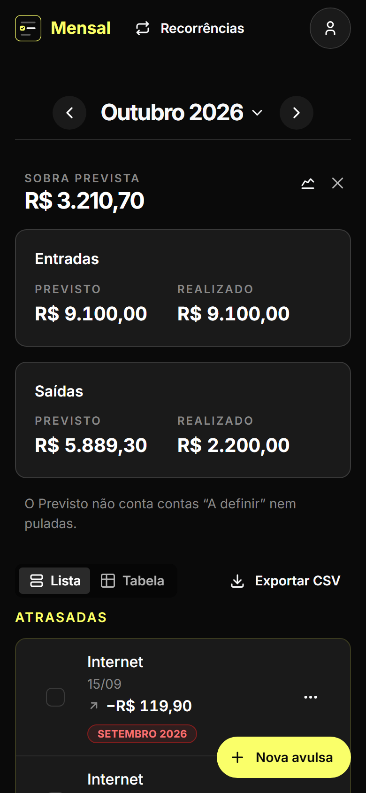
- Use as setas ao lado do nome do mês, ou as teclas ← e →, para ir a outros meses. Longe do mês corrente, Mês atual traz você de volta.
- Leia o resumo: a Sobra prevista é o Previsto das Entradas menos o Previsto das Saídas. Em cada bloco, Previsto soma as contas pendentes e liquidadas, e Realizado só as liquidadas. Contas “A definir” e puladas ficam fora do Previsto.
- Percorra os grupos, nesta ordem: Atrasadas, Vencem hoje, A vencer no mês e Liquidadas e puladas. No mês atual, Atrasadas também lista as contas de meses anteriores que ficaram para trás, cada uma marcada com a sua competência; elas não entram no resumo do mês.
- Toque no nome de uma conta para editar a descrição, o valor, o vencimento ou as observações dela.
O × do resumo o esconde; ele volta em Configurações.
Liquidar e pular
Liquidar registra que uma conta foi paga ou recebida; é um toque só. Pular dispensa a conta de uma recorrência em um único mês, sem mexer nos outros.
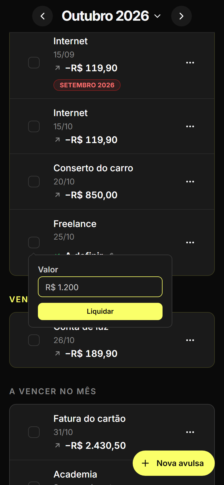
- Marque a caixa à esquerda da conta. Se a confirmação estiver ligada em Configurações, confirme em Liquidar. A conta vai para Liquidadas e puladas, com a data de hoje.
- Se o valor for “A definir”, como uma fatura que muda todo mês, a caixa abre um balão que pede só o Valor. Informe-o e toque em Liquidar.
- Para pular a conta neste mês, abra o menu ⋯ dela e escolha Pular. No mesmo menu, Retomar desfaz o pulo.
- Mudou de ideia? O aviso que aparece embaixo tem Desfazer; desmarcar a caixa também devolve a conta para pendente.
Contas avulsas
Uma conta avulsa acontece uma vez só e não vem de nenhuma recorrência: o conserto do carro, uma consulta, a venda de algo usado. Contas anuais e o histórico de meses passados também entram como avulsas.
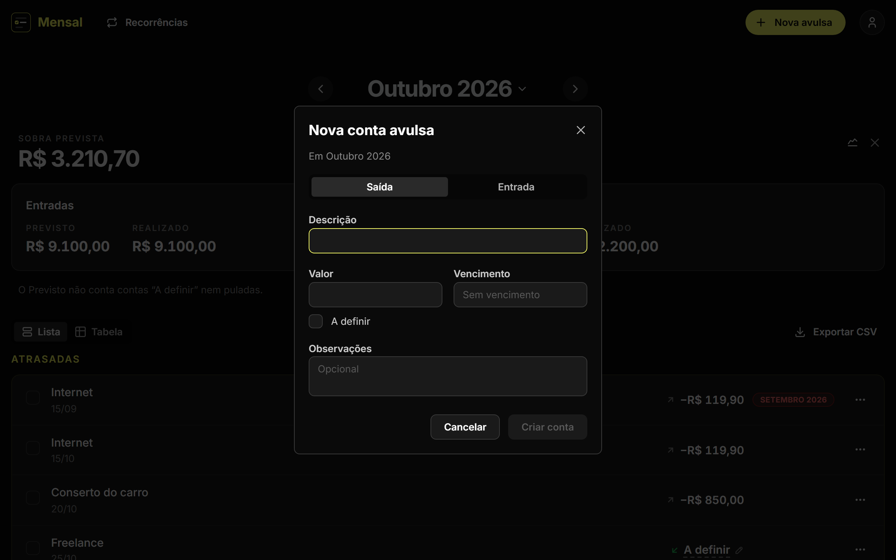
- Vá ao mês em que a conta acontece e toque em Nova avulsa.
- Escolha Saída ou Entrada e preencha a Descrição e o Valor, ou marque A definir se ainda não souber quanto será.
- Se quiser, informe o Vencimento, sempre dentro do mês, e Observações. Toque em Criar conta.
- Para apagar uma avulsa, use Excluir no menu ⋯ dela. Para mudá-la de mês, exclua-a e crie de novo no mês certo.
Recorrências
Uma recorrência é um compromisso mensal, como o aluguel ou o salário: ela gera uma conta em cada mês, do início até ser encerrada. Parcelas são recorrências com término.
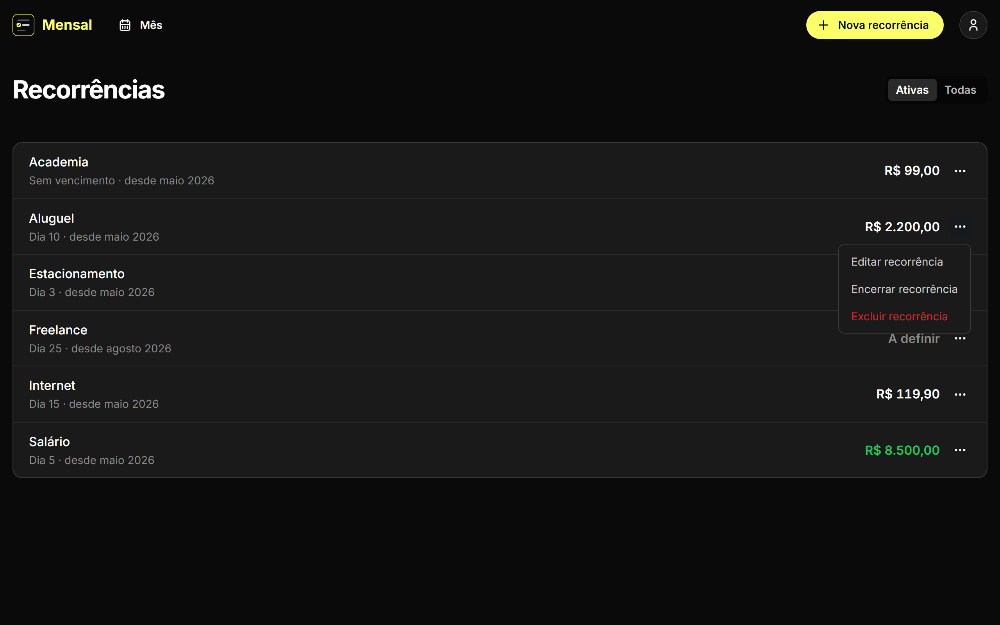
- Abra Recorrências no topo e toque em Nova recorrência. Escolha Saída ou Entrada e informe a Descrição, o Valor (ou “A definir”), o Dia do vencimento, o Início, que não pode ser antes do mês atual, e, se houver, o Término.
- Para editar, use Editar recorrência no menu ⋯ da recorrência, aqui ou numa conta dela na tela do mês. A mudança vale para os meses em que a conta ainda não foi tocada; contas já liquidadas, puladas ou editadas ficam como estão.
- Para parar, use Encerrar recorrência e escolha o Último mês. Nada é apagado: as contas já registradas continuam lá.
- Excluir recorrência só funciona enquanto ela não tem contas registradas. Se já tiver, o Mensal oferece encerrá-la, para não perder o histórico.
Lista, Tabela e Exportar CSV
As contas do mês podem aparecer como lista, agrupada, ou como uma tabela com todas as colunas lado a lado. Exportar CSV baixa as contas do mês para abrir numa planilha.
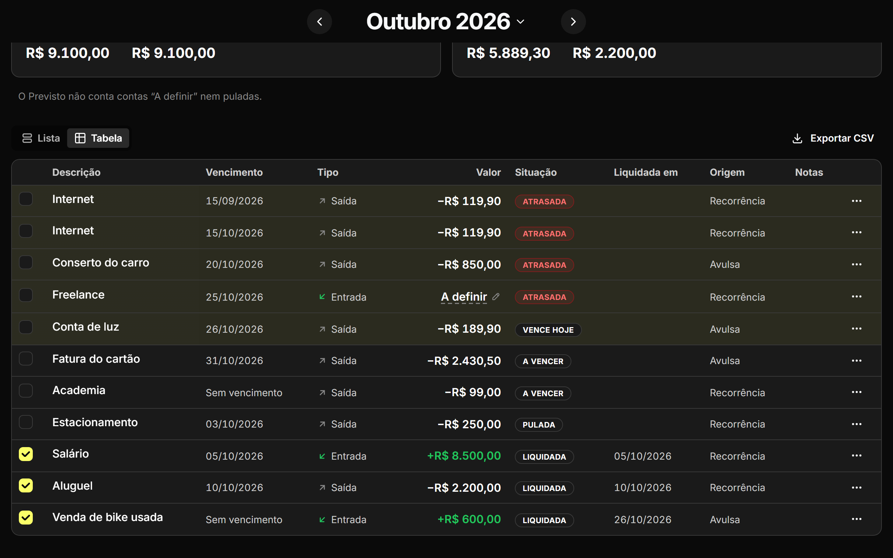
- Na barra acima das contas, escolha Lista ou Tabela. A escolha fica salva na sua conta e vale em todos os meses e dispositivos.
- Na Tabela, cada linha mostra a Situação (Atrasada, Vence hoje, A vencer, Liquidada ou Pulada) e a Origem (Avulsa ou Recorrência). A caixa e o menu ⋯ funcionam como na lista.
-
Toque em Exportar CSV para baixar
mensal-AAAA-MM.csv, com as contas do próprio mês na ordem da tabela. As atrasadas de meses anteriores ficam de fora, para que juntar vários meses nunca conte uma conta duas vezes.
Evolução
A Evolução põe lado a lado o Previsto, o Realizado e a Sobra prevista de vários meses seguidos, para ver como eles mudam de um mês para o outro.
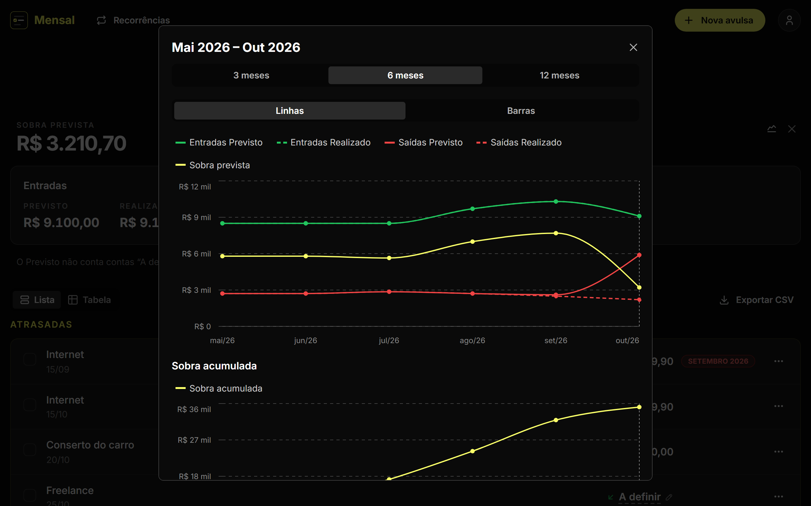
- No resumo do mês, toque no ícone Evolução. Ela mostra os meses que terminam no mês em tela, mesmo que ele esteja no futuro.
- Escolha 3, 6 ou 12 meses, e Linhas ou Barras. Toque num item da legenda para esconder ou mostrar essa série.
- Abaixo, o gráfico Sobra acumulada soma a Sobra prevista mês a mês, a partir de zero no primeiro mês.
- Abra Ver valores para ler os números de cada mês numa tabela.
Configurações
As Configurações mudam como o Mensal se comporta para você, nunca os seus dados. Elas ficam na sua conta: valem igual em todos os dispositivos em que você entrar.
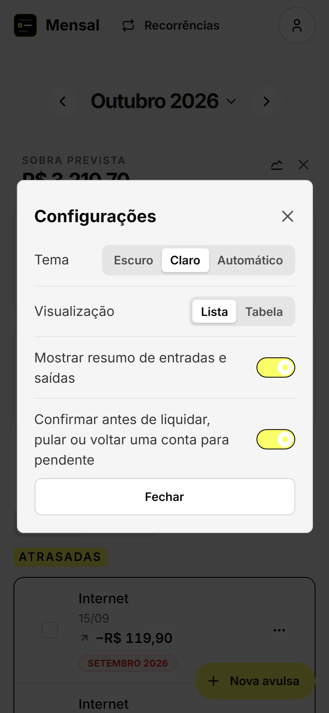
- Abra o menu da conta, no canto superior direito, e escolha Configurações.
- Em Tema, escolha Escuro, Claro ou Automático, que segue o tema do dispositivo. Em Visualização, escolha Lista ou Tabela.
- Ligue ou desligue Mostrar resumo de entradas e saídas e Confirmar antes de liquidar, pular ou voltar uma conta para pendente.
Cada mudança vale na hora; não há botão de salvar.
Instalar o app
O Mensal pode ficar na tela inicial do celular ou do computador e abrir em janela própria, como um app. Ele é instalado pelo próprio navegador; não há loja de aplicativos.
- No Android, abra o Mensal no Chrome, toque no menu ⋮ e escolha Instalar app ou Adicionar à tela inicial.
- No iPhone, abra o Mensal no Safari, toque em Compartilhar e escolha Adicionar à Tela de Início.
- No computador, no Chrome ou no Edge, use o ícone de instalar na barra de endereço ou o menu do navegador.
O Mensal funciona só com internet. Sem conexão o app abre, mas mostra “Sem conexão. O Mensal volta a funcionar quando a conexão voltar.” e fica travado até ela voltar; nenhum dado fica guardado no aparelho. Este guia também precisa de internet.
Agentes e tokens de acesso
Um agente de IA seu, como o Claude Code ou o Codex, pode ler e alterar os seus dados no Mensal: ver o mês, liquidar uma conta, criar uma avulsa ou uma recorrência. Ele se conecta pelo servidor MCP do Mensal, usando um token de acesso que você cria e pode revogar quando quiser.
1. Criar um token de acesso
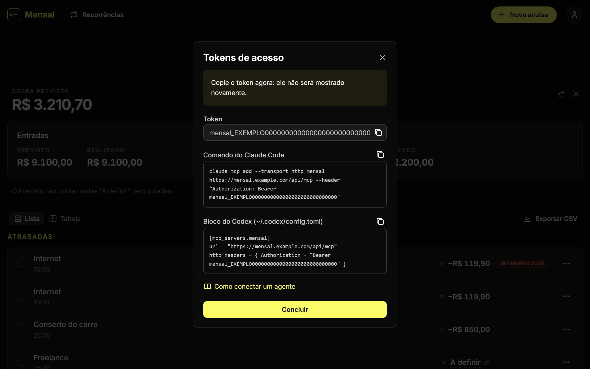
- Abra o menu da conta e escolha Tokens de acesso.
- Toque em Criar token, dê um nome que lembre o agente que vai usá-lo (por exemplo, “Claude Code”), informe a Senha atual e toque em Criar.
- Copie o token agora: ele não será mostrado novamente. Ao lado dele estão o comando do Claude Code e o bloco do Codex já preenchidos com o token e o endereço do seu Mensal.
Cada token pode ler e alterar tudo o que você pode. Guarde-o como uma senha e crie um token para cada agente.
2. Conectar o Claude Code
-
Copie o Comando do Claude Code da tela do token,
ou monte-o trocando
<endereço do Mensal>pelo endereço em que você usa o Mensal e<token>pelo seu token:claude mcp add --transport http mensal <endereço do Mensal>/api/mcp --header "Authorization: Bearer <token>" - Rode o comando num terminal.
-
Abra o Claude Code e confira com
/mcpque o servidormensalaparece conectado.
3. Conectar o Codex
-
Copie o Bloco do Codex da tela do token, ou
monte-o com o endereço do Mensal e o seu token:
[mcp_servers.mensal] url = "<endereço do Mensal>/api/mcp" http_headers = { Authorization = "Bearer <token>" } -
Cole o bloco no arquivo
~/.codex/config.tomle salve. - Abra o Codex de novo para ele carregar o servidor.
Outros clientes
Qualquer cliente MCP que consiga enviar o cabeçalho
Authorization: Bearer <token> para
<endereço do Mensal>/api/mcp funciona. Os
conectores personalizados do claude.ai não funcionam: eles pedem
OAuth, e o Mensal aceita só tokens de acesso.
Exemplos de conversa
Peça em português, com as palavras do Mensal. As ações de excluir vêm marcadas como destrutivas, para que o cliente peça a sua confirmação antes. Os valores abaixo são só exemplos.
Você quais contas vencem esta semana?
Agente Hoje vence a Conta de luz, de R$ 189,90. Até domingo vence ainda a Fatura do cartão, de R$ 2.430,50. A Internet de setembro continua atrasada.
Você liquide a conta de luz
Agente Pronto: a Conta de luz de outubro, de R$ 189,90, foi liquidada com a data de hoje.
Você registre uma saída avulsa de R$ 350 para o dentista, vencendo dia 12 do mês que vem
Agente Criei a avulsa “Dentista”, uma saída de R$ 350,00 com vencimento em 12 de novembro.
Revogar um token
- Em Tokens de acesso, toque no ícone de lixeira do token.
- Confirme em Revogar token. O agente que o usa perde o acesso na hora.
Redefinir a senha revoga todos os tokens; ao alterar a senha, você escolhe se quer revogá-los.
Lembretes
Todo dia às 9h, o Mensal avisa no celular ou no computador quais contas vencem no dia e quais estão atrasadas, para você não perder um vencimento. O lembrete aparece entre as notificações do sistema, mesmo com o Mensal fechado.
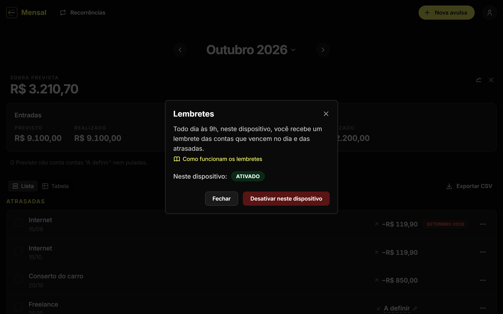
O lembrete nomeia as contas só pela descrição, sem os valores e sem as observações, porque aparece na tela de bloqueio. Por exemplo: “Vence hoje: Aluguel”, ou “2 contas vencem hoje”, com a lista das contas e “+ 1 atrasada”. As entradas vêm com “Entrada:” na frente. Num dia sem contas vencendo nem atrasadas, não chega nada. Tocar no lembrete abre o Mensal.
Os lembretes são ativados em cada dispositivo, um por um: ativar no celular não ativa no computador. Você recebe um lembrete por dia em cada dispositivo ativado.
1. Ativar no Android ou no computador
- Abra o Mensal no navegador do dispositivo, abra o menu da conta e escolha Lembretes.
- Toque em Ativar neste dispositivo e, quando o navegador perguntar, permita as notificações.
- Pronto: Neste dispositivo passa a mostrar Ativado. Para parar, toque em Desativar neste dispositivo.
2. Ativar no iPhone ou no iPad
- No iPhone e no iPad, os lembretes só funcionam no app instalado na tela inicial, com iOS 16.4 ou mais recente. Pelo Safari, a tela Lembretes mostra Indisponível.
- Instale o app, como em Instalar o app, e abra o Mensal pelo ícone na tela inicial.
- No menu da conta, escolha Lembretes, toque em Ativar neste dispositivo e permita as notificações.
Se as notificações foram bloqueadas
Se você recusou as notificações, a tela Lembretes mostra Bloqueado pelo navegador, e o Mensal não consegue pedir de novo: só você pode desfazer isso.
- No computador e no Android, toque no ícone ao lado do endereço do site, abra as configurações do site e permita as Notificações. No iPhone e no iPad, abra Ajustes, depois Notificações, escolha Mensal e permita as notificações.
- Abra a tela Lembretes de novo e toque em Ativar neste dispositivo.
Outros dispositivos
A tela Lembretes mostra em quantos outros dispositivos os lembretes estão ativados, e Desativar em todos os dispositivos desativa todos de uma vez, depois de uma confirmação. Ao sair da conta num dispositivo, os lembretes dele são desativados. Redefinir a senha desativa os lembretes em todos os dispositivos; ao alterar a senha, Desconectar dos outros dispositivos desativa os dos outros e mantém os deste.
Contas no seu calendário
Prefere ver no calendário? Com o Link do calendário, as suas contas pendentes aparecem no calendário que você já usa, como o Google Agenda ou o Calendário da Apple: cada uma como um evento de dia inteiro no dia do vencimento, com um lembrete às 9h desse dia.
Entram as entradas e as saídas pendentes com vencimento, do mês atual e dos 3 meses seguintes, e as atrasadas de meses anteriores, no dia em que venceram. Cada evento mostra a descrição e o valor (ou “A definir”), com “Entrada:” na frente das entradas, e traz a competência e um link para aquele mês no Mensal. As observações nunca vão para o calendário. Contas sem vencimento, liquidadas ou puladas ficam de fora.
1. Gerar o link
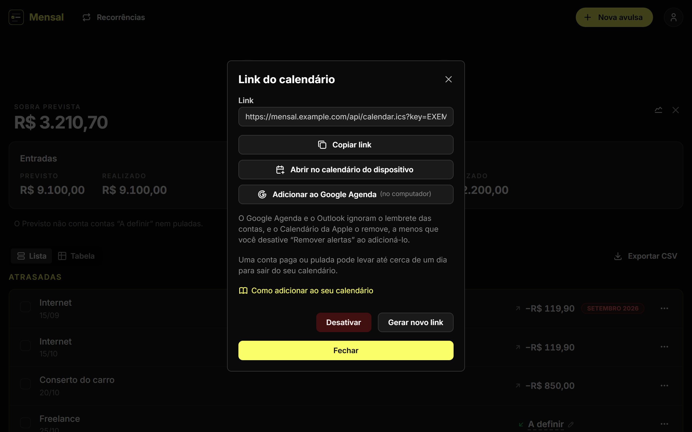
- Abra o menu da conta e escolha Link do calendário.
- Toque em Gerar link e informe a Senha atual. Ao adicionar o link, a descrição e o valor de cada conta pendente passam a ficar guardados também com o provedor do seu calendário.
- O link aparece sempre que você abrir essa tela, para adicioná-lo em outro aparelho depois. Trate-o como uma senha: quem tiver o link vê as suas contas pendentes.
2. Adicionar ao Google Agenda
- Faça isso num computador: os apps do Google Agenda para celular não adicionam uma agenda por link. Depois, os eventos aparecem também no celular.
- Toque em Copiar link. No Google Agenda, ao lado de Outras agendas, toque em +, escolha Do URL, cole o link e confirme. O botão Adicionar ao Google Agenda faz o mesmo de uma vez, quando o Google o aceita.
- O Google ignora o lembrete do link. Para ser avisado, abra as configurações da agenda Mensal no Google Agenda e, em Notificações de eventos de dia inteiro, adicione uma notificação, por exemplo no mesmo dia, às 9h.
3. Adicionar ao Calendário da Apple
- No iPhone, no iPad ou no Mac, toque em Abrir no calendário do dispositivo. O Calendário abre pronto para adicionar o link.
- Antes de confirmar, desative Remover alertas. Ligada, como vem, ela apaga o lembrete das 9h.
- Confirme. A agenda aparece com o nome Mensal.
Quando o calendário se atualiza
Quem busca o link é o seu calendário, no ritmo dele, e não há como apressá-lo: uma conta liquidada ou pulada pode levar até cerca de um dia para sair do calendário, e até lá ainda pode lembrar você.
Gerar um novo link ou desativar
- Gerar novo link pede a senha atual e substitui o link: o atual deixa de funcionar em todos os calendários que o usam, e você adiciona o novo onde quiser.
- Desativar pede só uma confirmação, e o link deixa de funcionar em todos os calendários que o usam. Para tirar a agenda Mensal de um calendário, remova-a nele.
Sua conta
No menu da conta, no canto superior direito, ficam o seu nome, a sua senha, uma cópia dos seus dados e a exclusão da conta.
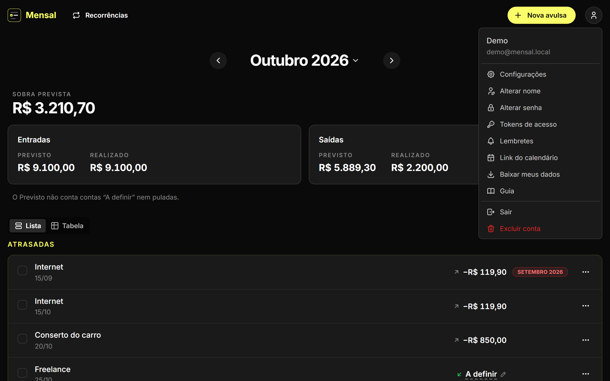
- Alterar nome: troque o nome pelo qual o Mensal chama você. Ele não muda o seu e-mail nem como você entra.
- Alterar senha: informe a senha atual e a nova duas vezes. Deixe marcados Desconectar dos outros dispositivos e Revogar todos os tokens de acesso e o link do calendário, a não ser que tenha um motivo para mantê-los. Esqueceu a senha? Na tela de entrada, use Esqueci a senha para receber por e-mail um link que vale por 1 hora.
- Baixar meus dados: baixa um arquivo ZIP com tudo o que você cadastrou, em três planilhas CSV: o seu perfil, as suas recorrências e as suas contas.
- Excluir conta: apaga para sempre a conta e todas as recorrências, contas e tokens de acesso, e o link do calendário. Antes, o Mensal oferece baixar os seus dados; para confirmar, informe a senha atual e digite o seu e-mail. Isso não pode ser desfeito.